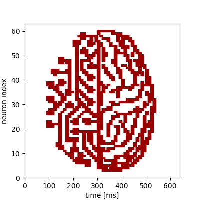

Demonstration of multiple chip-reconfigurations during an experiment
This modification of the plasticity experiment showcases the dynamic reconfiguration of the chip by using the new append functionality of pynn.brainscales. This example only changes synaptic weights during the experiment, but any arbitrary changes to the chip configuration can be applied this way.
%matplotlib inline
from os.path import join
import numpy as np
import matplotlib.pyplot as plt
import pynn_brainscales.brainscales2 as pynn
from dlens_vx_v3 import hal
# setup shared connection to hardware
from _static.common.helpers import setup_hardware_client
setup_hardware_client()
The Experiment
The goal of this experiment is to take a picture as an input, adjust the weights of some specific synapses to match the pixel values, and send spike-trains through these synapses, so that the according neurons can detect these pixel values again and we can use the measured data in the end, to recreate the image. For this example, we used the 64 x 64 Pixel “visions.png” image:

Therefore we read in the pixel values of the image as the first step of our program:
def read_image(path: str) -> np.array:
"""
Read image from file and scale it to the weight range.
:param path: Path to image file
:return: Image data as numpy array normalised to hardware weight range
"""
image = np.asarray(plt.imread(path))
# Scale to weight range [0, 63]
image = image / image.max() * hal.SynapseWeightQuad.Value.max
return np.flipud(image).T
# Read image into 2d numpy array
image = read_image(join("_static", "tutorial", "visions.png"))
Setup of the Experiment
We now have a 2d numpy array image that has the (scalar) pixel values of our black-and-white
image. Our network consists of two populations: An input population of one neuron, that feeds the
input spikes into the synapse array and a recording population of 64 neurons.
The projection projects the signal of the input neuron with an AllToAllConnector to all 64
recording neurons across individual synapses, the weights of which can be modified according to the
pixel values of the picture throughout the experiment. The input neuron will send 100 spikes onto
the chip, linearly spaced in time over the duration of our runtime, which is 10ms.
To ensure, that our recording neurons spike when receiving input spikes, we pass the argument
enable_neuron_bypass=True when setting up our simulator object with pynn.setup().
pynn.setup(enable_neuron_bypass=True)
runtime = 10 # runtime per configuration in ms
n_spikes = 100 * len(image)
spikes = np.linspace(0, runtime * len(image), n_spikes)
input_population = pynn.Population(1, pynn.cells.SpikeSourceArray(spike_times = spikes))
recording_population = pynn.Population(64, pynn.cells.HXNeuron())
recording_population.record('spikes')
synapse = pynn.standardmodels.synapses.StaticSynapse(weight=32)
projection = pynn.Projection(input_population,
recording_population,
pynn.AllToAllConnector(),
receptor_type="excitatory",
synapse_type=synapse)
Reconfiguration and Execution
We want to reconfigure our projection every 10ms to represent the weights of the next row of our
image. In order to do this, we iterate over all rows of our image and set the synapse weights
accordingly inside the loop followed by a call of pynn.run() with the append command, which
appends a new snippet with the current configuration and a duration of runtime to the
experiment. After we have scheduled our complete experiment, we call pynn.run() with the
execute command to trigger the execution of the experiment on hardware. In the performed hardware
run, all our staged configurations are being executed one after another for the given runtime each.
for i in range(len(image)):
projection.set(weight=image[i])
# Append a snippet of duration 'runtime' with the currently described network configuration
# to the experiment
pynn.run(runtime, pynn.RunCommand.APPEND)
# Trigger the execution of a hardware run without scheduling another snippet
pynn.run(None, pynn.RunCommand.EXECUTE)
Evaluation
We firstly retrieve all recorded spiketrains from the recording_population. These are 64*64 in
total, because we get one per neuron per snippet. However, all spiketrains of each neuron, according
to the different realtime snippets, are ordered by the number of the realtime snippets, i.e. by
time.
In order to plot our result, we need one continuous spiketrain per neuron. Therefore, we need to
filter the returned list of spiketrains by the neuron index, i.e. the cell id and concatenate the
times of all spiketrains belonging to the same neuron.
By showing now the times, where we a spike was recorded for each neuron, we should get the image
from the beginning again.
#read out results
spiketrains = recording_population.get_data('spikes').segments[0].spiketrains
spiketrains_concatenated = [ [] for _ in range(64) ]
for spiketrain in spiketrains:
spiketrains_concatenated[spiketrain.annotations["source_id"] - 1].extend(spiketrain.times)
#plot results
fig = plt.gcf()
fig.set_size_inches(4, 4)
plt.eventplot(spiketrains_concatenated, color='#990000')
plt.xlim(0,640)
plt.ylim(0,63)
plt.xlabel("time [ms]")
plt.ylabel("neuron index")
fig.show()
We see a replicated version of the original image encoded in the time evolution of the neurons’ firing rates.
{kind=link}